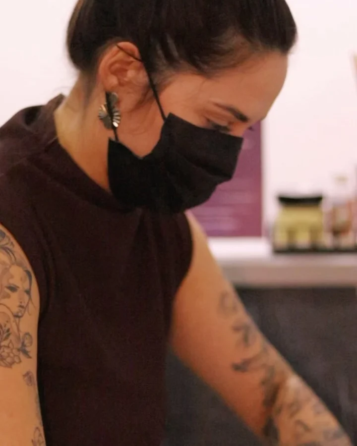

André Ricardo
Realismo · floral · blackwork
Ver portfólio
Di Jesus Tattoo
Body piercing
A Marcela cuida dos piercings do estúdio: orelha, nariz, sobrancelha e composições completas de orelha.
Trabalha com joias de titânio e aço cirúrgico, com topos em zircônia, e acompanha a cicatrização.
Trabalhos recentes da Marcela no Di Jesus. Toque numa foto para ver grande e, se quiser um parecido, é só pedir.
Preencha em um minuto e o pedido chega pronto no WhatsApp dela.
Diga onde quer o piercing ou a troca de joia.
Marcela indica a joia certa para o local.
Você escolhe o dia e o horário.
Sai com as orientações de cicatrização.
Realismo · floral · blackwork
Ver portfólioOld school · pontilhismo · geometria
Ver portfólioRealismo preto e cinza · cobertura
Ver portfólio